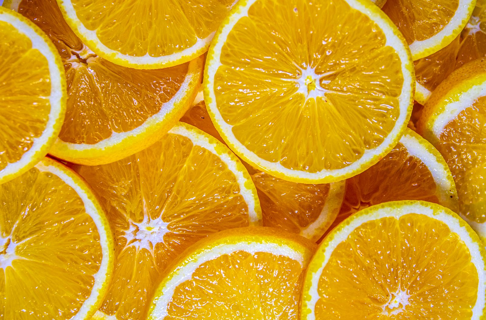

Il pane di questo forno è una scoperta. Crosta che scrocchia, mollica morbida e un profumo che si sente dal fondo della via. Si sente la cura in ogni pezzo, dalle michette alla focaccia. Il sabato mattina ormai passo qui prima di tutto il resto.
Giulia Ferretti
★★★★★